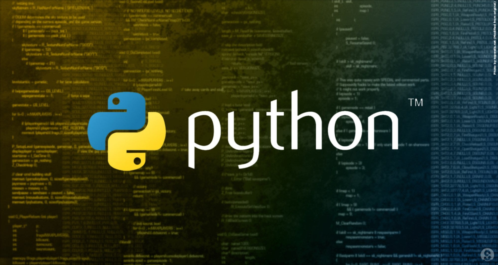

birthPlan
Contexto
O projeto birthPlan surge no contexto do curso de Programação 1 (LTI) do Departamento de Informática da Faculdade de Ciências de Lisboa, no ano letivo 2023/2024. Este projeto tem como objetivo desenvolver uma aplicação em Python 3 chamada birthPlan, que visa melhorar a organização e otimizar os recursos dos serviços de maternidade de um grupo de hospitais. Para aceder ao projeto basta clicar aqui.
Descrição
O birthPlan é um software projetado para apoiar a equipa de enfermagem no encaminhamento de grávidas para os serviços de maternidade. Ele será utilizado pela coligação de hospitais smartH para gerir a atribuição de assistência no parto a médicos especialistas e respetivas equipas. O programa recebe informações sobre médicos, calendário de assistências agendadas e pedidos de assistência não atribuídos. Ele produz atualizações no calendário de assistências e na listagem dos médicos após analisar e distribuir os pedidos.
Funcionalidades
- Entrada: O programa recebe três ficheiros com informações sobre médicos, calendário de assistências e pedidos de assistência.
- Saída: O programa gera dois ficheiros de saída, um com a listagem atualizada dos médicos e outro com a calendarização das assistências atualizada.
Como Executar
Para executar o software, utilize o seguinte comando na linha de comandos:
python3 refresh.py inputFile1 inputFile2 inputFile3
Certifique-se de que a ordem dos ficheiros de entrada (inputFile1, inputFile2, inputFile3) é a correta.
inputFile1- É o ficheiro com a listagem dos médicos.inputFile2- É o ficheiro com a calendarização das assistências.inputFile3- É o ficheiro com a listagem dos pedidos de assistência.
Desenvolvimento do Software
O software é composto pelos seguintes módulos:
constants.py: Define as constantes necessárias.dateTime.py: Contém funções para lidar com formatos e operações com datas e tempos.infoFromFiles.py: Fornece funções para ler informações de ficheiros.planning.py: Contém funções para realizar a calendarização e atualização das estruturas de dados.infoToFiles.py: Oferece funções para escrever informações em ficheiros.refresh.py: Programa principal que utiliza os módulos anteriores para realizar a aplicação birthPlan.